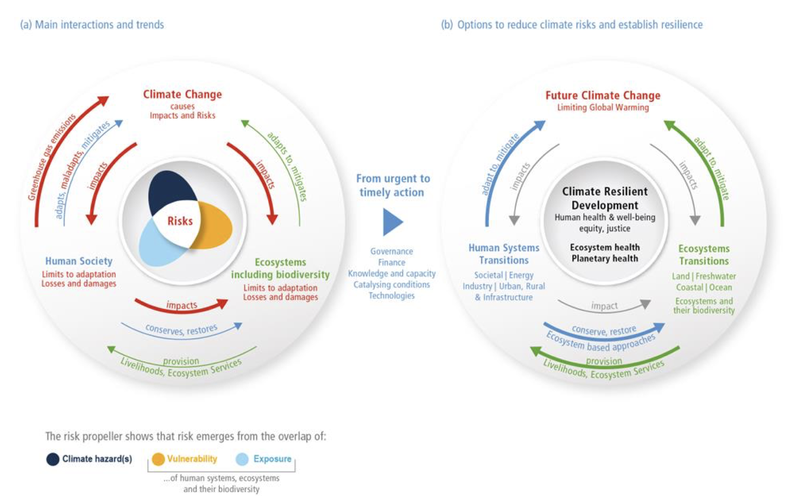
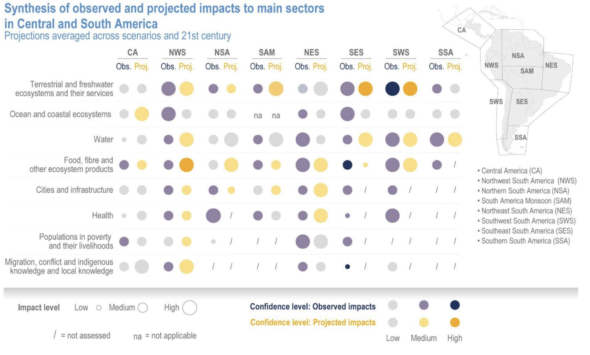
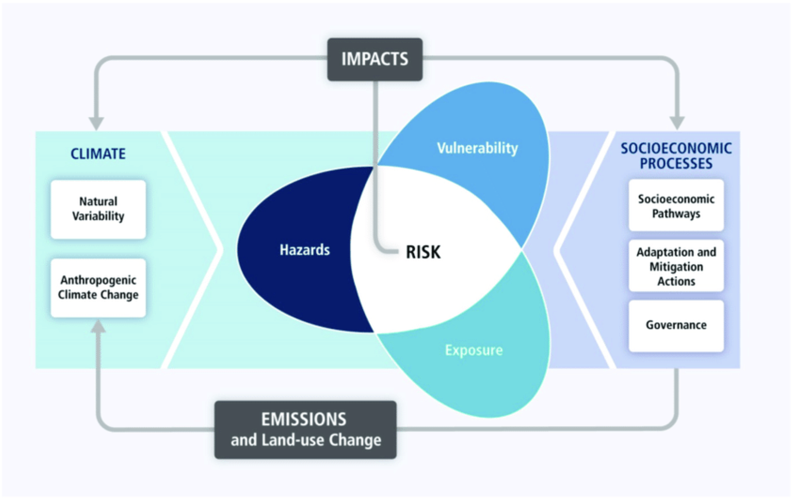

5 Riesgos e Impactos
5.1 Introducción
El reporte del Grupo II del Sexto Informe de Evaluación (AR6) del cambio climático (IPCC, 2022b), reconociendo la interdependencia del clima, los ecosistemas y la biodiversidad y la sociedad humana. Este marco conceptual extendido se presenta en la Figure 5.1

Estas interacciones son la base de los riesgos emergentes del cambio climático, la degradación de los ecosistemas y la pérdida de biodiversidad. En la parte (a) de la figura, la sociedad humana causa el cambio climático (líneas azules). El cambio climático, a través de amenazas, exposición y vulnerabilidad genera impactos y riesgos (líneas rojas) que pueden sobrepasar los límites de adaptación y resultar en pérdidas y daños. La sociedad humana puede adaptarse, adaptarse mal y/o mitigar el cambio climático, los ecosistemas y la biodiversidad pueden adaptarse y mitigar dentro de ciertos límites (líneas verdes). Los ecosistemas y su biodiversidad proporcionan medios de subsistencia y servicios ecosistémicos que pueden verse afectados por los impactos que genera la sociedad humana, la cual a su vez puede restaurarlos y conservarlos para asegurar el flujo de contribuciones de los ecosistemas a las personas o servicios ecosistémicos y potenciar la mitigación y adaptación ante el cambio climático que poseen los ecosistemas y la biodiversidad en general. Al mismo tiempo, estas interrelaciones ofrecen oportunidades para el futuro. En la parte (b) de la figura se establecen las interrelaciones que permiten cumplir los objetivos del desarrollo resiliente al clima, apoyando el bienestar de los ecosistemas y del planeta, así como el bienestar humano, a través de una transición de la sociedad y los ecosistemas hacia un estado más resiliente. La adopción de medidas está habilitada por la gobernanza, las finanzas, el conocimiento y la creación de capacidad, la tecnología y las condiciones catalizadoras.
El aumento de las concentraciones atmosféricas de CO^2 provoca efectos en cascada a través de seis de los otros indicadores climáticos clave que perpetúan el calentamiento y contribuyen a eventos de alto impacto, poniendo en riesgo la consecución de los Objetivos de Desarrollo Sostenible (ODS) Figure 6.1.
5.2 Seguridad alimentaria
Tras un peak de subnutrición en 2020 (768 millones de personas), las proyecciones indicaban un descenso del hambre en el mundo hasta unos 710 millones en 2021 (9%). Sin embargo, en octubre de 2021, las cifras en muchos países ya eran superiores a las de 2020.
Sequía en África Oriental
La cosecha de la primera temporada de 2021 a lo largo de las zonas central y meridional de África oriental se ha visto negativamente afectada por las prolongadas sequías, sobre todo en Kenia, donde la producción de maíz se ha estimado oficialmente entre un 42% y un 70% por debajo de la media.
La Niña
Las condiciones meteorológicas extremas de La Niña 2020/21 alteraron las temporadas de lluvias, perturbando los medios de subsistencia y las campañas agrícolas en todo el mundo.
En el Caribe, Haití se ha visto triplemente afectado por terremotos, lluvias irregulares e inestabilidad política, aumentando los daños agrícolas y empeorando significativamente la inseguridad alimentaria.
Ciclón Eloise
Eloise tocó tierra en Mozambique a finales de enero, durante la temporada de escasez en la región, cuando las vulnerabilidades eran máximas y las comunidades afectadas aún se recuperaban del ciclón Idai, hace apenas dos años. El ciclón afectó a más de 441.000 personas y destruyó más de 45.000 hectáreas de tierras de cultivo.
La sequía agrava contextos ya frágiles
Las condiciones de sequía en Oriente Próximo redujeron la producción de cereales a niveles inferiores a la media, agravando los efectos sobre la agricultura y la seguridad alimentaria en contextos frágiles, principalmente en Afganistán y la República Árabe Siria.
Lluvias torrenciales en China
A mediados de julio de 2021, el centro de China se vio afectado por lluvias torrenciales que causaron numerosas víctimas mortales y daños materiales. Esto provocó preocupación por el posible impacto en el suministro de alimentos de la nación, ya que 1 millón de hectáreas de tierras de cultivo -principalmente maíz, soja y cacahuetes- se vieron afectadas, un tercio de las cuales fueron arrasadas.
Overall, the compounded effects of conflict, extreme weather events and economic shocks, further exacerbated by the COVID-19 pandemic, have led to a rise in hunger, undermining decades of progress towards improving global food security.
5.3 Desplazamiento
Los fenómenos y las condiciones meteorológicas extremas han tenido repercusiones importantes y diversas en los desplazamientos de población y en la vulnerabilidad de las personas ya desplazadas a lo largo del año. Desde Afganistán hasta Centroamérica, las sequías, las inundaciones y otros fenómenos meteorológicos extremos están afectando a los menos preparados para recuperarse y adaptarse.
Sequía e inundaciones
La sequía y las inundaciones afectaron a las actividades agrícolas en Nigeria, lo que provocó la pérdida de viviendas y aumentó la vulnerabilidad de las personas ya desplazadas por el conflicto en el noreste. La situación se deterioró aún más en el primer semestre de 2021, con unos 294 000 nuevos desplazamientos registrados entre enero y junio de 2021.
En África Oriental, especialmente en Somalia y Etiopía, muchos de los más afectados ya vivían hacinados e inseguros en campos para desplazados internos, a los que también se trasladaron muchos de los nuevos desplazados por las inundaciones. Los agricultores cuyas cosechas fueron devastadas por las langostas del desierto también se vieron obligados a desplazarse en busca de ayuda para sobrevivir.
Tormentas tropicales y ciclones
En enero, los fuertes vientos e inundaciones provocados por la tormenta tropical Chalane y el posterior ciclón Eloise dañaron o destruyeron los refugios de más de 8700 familias ya desplazadas internamente, así como escuelas y hospitales de Mozambique.
Lluvias monzónicas
Las lluvias monzónicas provocaron inundaciones masivas en Bangladesh y el desplazamiento de millones de personas tras el ciclón Yaas en junio de 2021. En los asentamientos de refugiados rohingya de Cox’s Bazar, más de 6.000 refugios resultaron dañados y más de 25.000 refugiados se vieron obligados a buscar cobijo en instalaciones comunales o con otras familias.
Desplazamiento prolongado y repetido
Debido al riesgo continuo o creciente en sus zonas de origen (y retorno) o asentamiento, las personas desplazadas por fenómenos hidrometeorológicos y climáticos también pueden verse sometidas a desplazamientos repetidos y frecuentes, que dejan poco tiempo para la recuperación entre una sacudida y la siguiente.
Estas situaciones ponen de relieve la importancia de la preparación ante las catástrofes y la gestión de riesgos, pero también de apoyar soluciones al desplazamiento que sean sostenibles y de respaldar la resiliencia de las personas que, de otro modo, podrían ver cómo sus condiciones de vida se erosionan progresivamente a causa de catástrofes y desplazamientos repetidos.
5.4 Ecosistemas
Los ecosistemas -incluidos los terrestres, de agua dulce, costeros y marinos- y los servicios que prestan se ven afectados por el cambio climático y algunos son más vulnerables que otros. Los ecosistemas se están degradando a un ritmo sin precedentes, lo que limita su capacidad para sustentar el bienestar humano y perjudica su capacidad de adaptación para aumentar su resiliencia.
Ecosistemas de montaña
Los ecosistemas de montaña -las torres de agua del mundo- son vulnerables y pueden verse profundamente afectados por el cambio climático debido a su escasa capacidad de adaptación. Esto puede afectar a los 1,9 millones de personas que viven en zonas de montaña. El cambio climático puede exacerbar el estrés hídrico, especialmente en zonas de precipitaciones reducidas y donde las aguas subterráneas ya se están agotando, afectando a la producción agrícola, a las tierras cultivables y a los más de 2.000 millones de personas que ya sufren estrés hídrico.
Pérdida y extinción de biodiversidad
Los cambios sustanciales en la abundancia y distribución de las especies pueden afectar a su vez a las interacciones entre ellas. El cambio climático también agrava otras amenazas a la biodiversidad. El número de especies que se prevé que se extingan aumenta drásticamente a medida que aumenta la temperatura global, y es un 30% mayor con un calentamiento de 2 °C que con un calentamiento de 1,5 °C.
Ecosistemas árticos
El cambio climático está provocando la desintegración de las capas de hielo de Groenlandia y la Antártida y aumentando las posibilidades de que el océano Ártico se quede sin hielo en verano, lo que perturbará aún más la circulación oceánica y el ecosistema ártico.
Ecosistemas costeros y marinos
El aumento de las temperaturas incrementa el riesgo de pérdida irreversible de ecosistemas marinos y costeros, como las praderas marinas y los bosques de algas. Los arrecifes de coral son especialmente vulnerables al cambio climático. Se prevé que pierdan entre el 70 y el 90% de su antigua área de cobertura con 1,5 °C de calentamiento y más del 99% con 2 °C.
5.5 Actividades económicas
El cambio climático representa múltiples desafíos para la región de América Latina y el Caribe, la cual es altamente diversa tanto en aspectos climáticos como socioeconómicos, lo que genera que cada uno de los países tengan diferentes necesidades ante los efectos del cambio climático (FMI, 2021). Varios países de la región han experimentado un crecimiento económico sostenido en las últimas décadas, logrando importantes avances en términos de reducción de la pobreza en la zona. Sin embargo, es una región de gran desigualdad social, incluyendo la más alta desigualdad en la tenencia de la tierra. Además, en algunos países un gran porcentaje de la población aún se encuentra bajo la línea de pobreza, la cual está desigualmente distribuida entre áreas rurales y urbanas y en aspectos como género y raza; estos grupos son altamente vulnerables al cambio climático y a los eventos naturales extremos que afectan con frecuencia a la región (IPCC, 2021b).

5.6 ¿Qué se puede hacer?
El clima está cambiando de una forma sin precedentes, pero aún hay muchas opciones para paliar sus efectos, tanto mediante la mitigación como mediante la adaptación.

- Adaptación:
- A medida que los fenómenos meteorológicos extremos se hacen más frecuentes e intensos, las predicciones deben ir más allá de lo que será el tiempo para incluir lo que hará el tiempo. Los sistemas de alerta temprana permiten a la gente saber que se avecinan fenómenos meteorológicos peligrosos e informan sobre cómo pueden actuar los gobiernos, las comunidades y los individuos para minimizar los impactos inminentes.
Sin embargo, un tercio de la población mundial, principalmente en los países menos desarrollados y en los pequeños estados insulares en desarrollo, todavía no está cubierta por los sistemas de alerta temprana. En África, la situación es aún peor: el 60% de la población carece de cobertura.
- Mitigación:
- Sin embargo, aunque se mejore la adaptación, el clima seguirá cambiando a menos que se aborden los factores subyacentes. Según el IPCC, sin una reducción inmediata y profunda de las emisiones en todos los sectores y regiones, será imposible mantener el calentamiento por debajo de 1,5° C.
5.7 Referencias:
GCOS: Global Climate Inticators- Risk & Impacts
10 ways you can help fight the climate crisis
Bases físicas e indicadores del cambio climático en América Latina y el Caribe